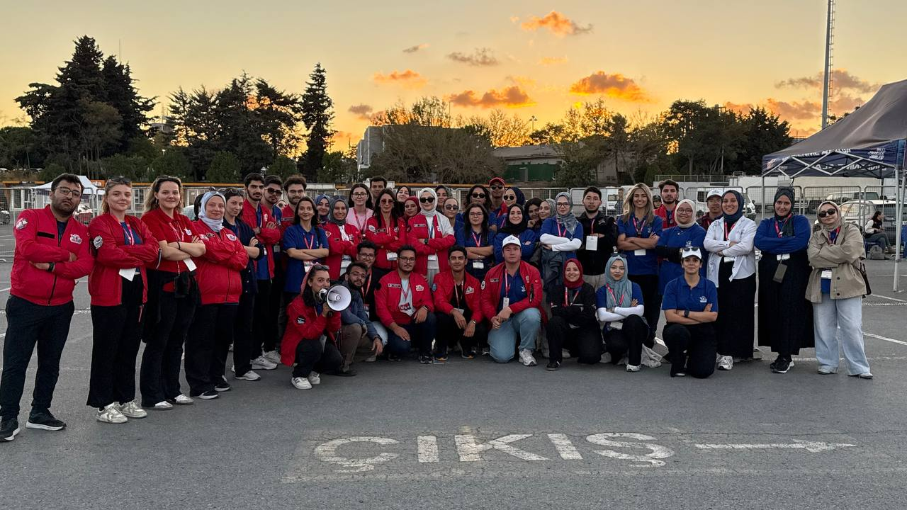
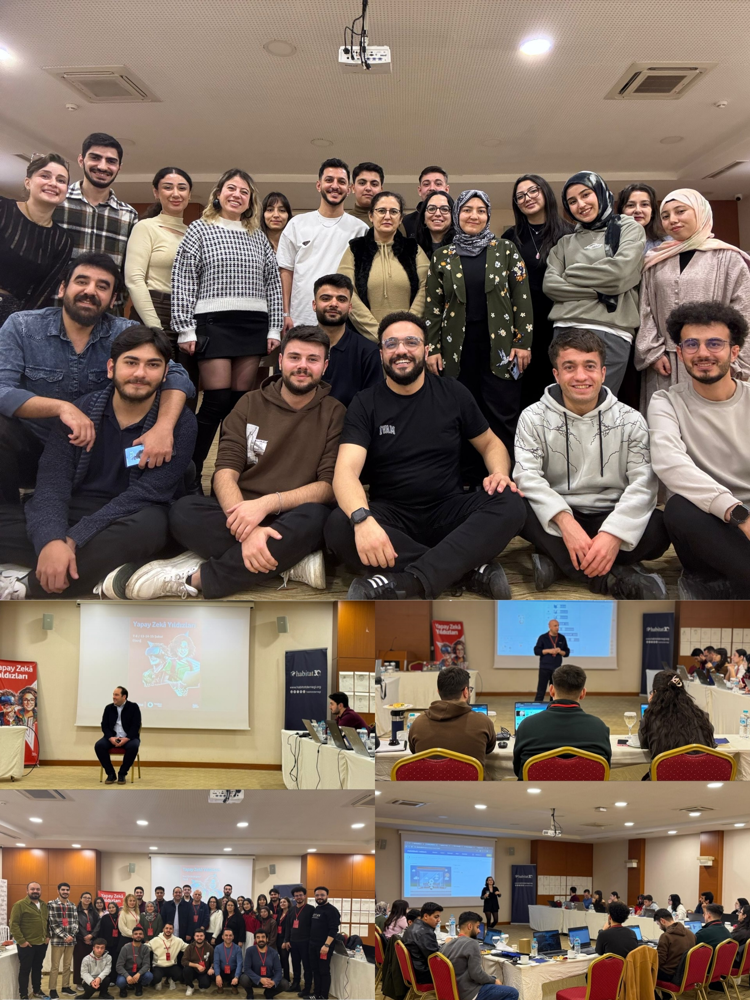
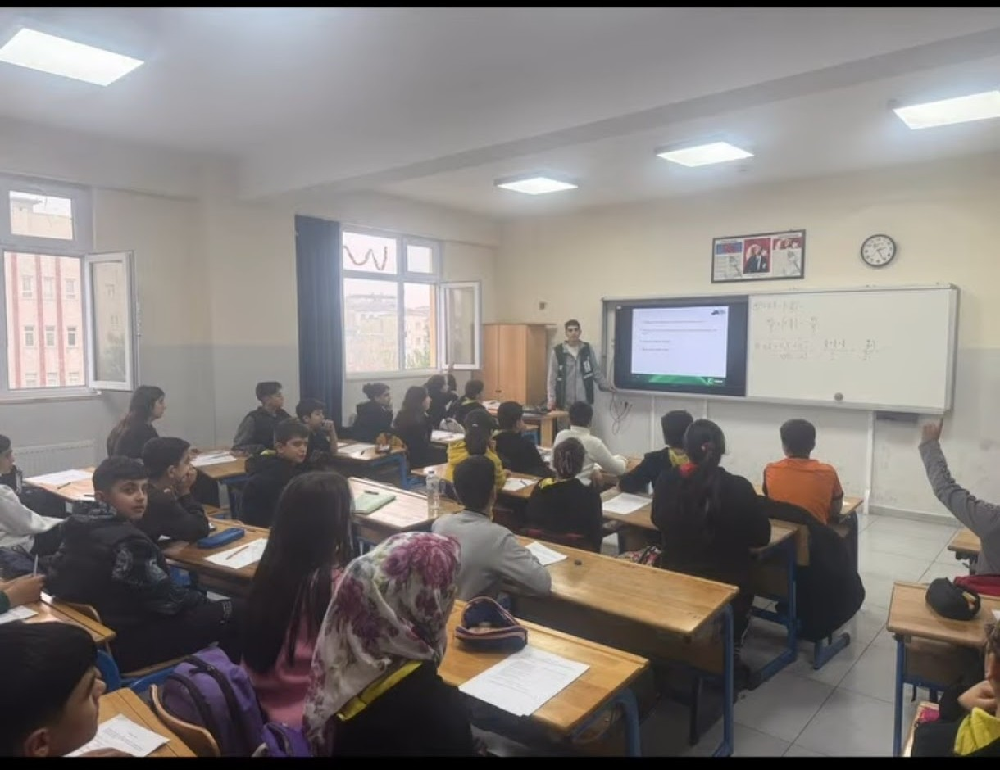

> Konum_ Batman, Türkiye
> Ana Hedef_ Bilgisayar Müh. & Savunma Sanayii
> Güncel Odak_ TYT/AYT & TeknoAI-T Projeleri
> Sistem Modu_ Sürekli Gelişim Gözlemleniyor...
Turizm sektöründe sahada çalışarak kazandığım insan ilişkileri, kriz yönetimi ve dinamik düşünme becerilerini; teknoloji dünyasının analitik ve mühendislik yapısıyla birleştiriyorum. Sadece kod yazan biri değil, aynı zamanda toplum için değer üreten, teknolojiyi bir amaç değil, ülkesini ileri taşıyacak bir araç olarak gören bir teknoloji sevdalısıyım.
Özellikle Yapay Zeka, Savunma Sanayii ve Nükleer Enerji alanlarındaki küresel yenilikleri yakından takip ediyor, Girişimcilik360 ekosisteminde aktif olarak vizyonumu genişletiyorum. Milli Teknoloji Hamlesi ruhunu içselleştirmiş biri olarak en büyük hayalim; geleceğin donanımlı bir bilgisayar mühendisi olup, ülkemin otonom sistemlerine, havacılık teknolojilerine ve kritik savunma yazılımlarına imza atacak mimarlardan biri olmak.
Hedefim olan bilgisayar mühendisliği ve savunma sanayii doğrultusunda algoritmik düşünme becerilerimi her geçen gün güçlendiriyorum.
TeknoAI-T takımı bünyesinde geliştirdiğimiz, görüntü işleme ve veri analizi yeteneklerine sahip yapay zeka entegrasyon projesi.
>_ Detayları GörMilli Teknoloji Hamlesi vizyonuyla, savunma sanayii standartlarında uçuş güvenliği ve hedef tespiti yapabilen kavramsal algoritma tasarımı.
>_ Detayları GörSivil toplum kuruluşlarıyla entegre çalışan, gençleri teknoloji bağımlılığından üretken teknolojiye yönlendiren saha çalışması arşivi.
>_ Detayları GörTeknoloji ve inovasyon heyecanını bölgede yaşamak ve projelere vizyon katmak için planlanan katılım ve saha çalışması.
>_ Detayları GörGirişimcilik ekosistemindeki yeni trendleri keşfetmek ve güçlü bir profesyonel ağ oluşturmak amacıyla katılınacak zirve.
>_ Detayları GörSadece dijital dünyada değil, fiziksel dünyada da iz bırakmak gerektiğine inanıyorum. Toplumsal fayda için sahada omuz omuza çalıştığım kurumlar:
👆 Bir olaya tıkla — detayları keşfet
İletişim, kriz yönetimi ve disiplini sahada tecrübe ettiğim ilk dönüm noktası.
Toplum için değer üretme kararı alıp STK ekosistemini araştırmaya başladığım gün.
Roketlerin gölgesinde mühendislik hedeflerimin perçinlendiği devasa deneyim.
Sahaya inip genç nesillere farkındalık aşılamanın gururunu yaşadığım ilk etkinlik.
Kendi şehrimde gençlik stratejileri üretmek adına masaya oturduğum beyin fırtınası.
T3 Vakfı ailesiyle eğitimlerden ve takım ruhu çalışmalarından geçtiğim muazzam kamp.
Sivil toplum ağımı ulusal boyuta taşıdığım, vizyon paylaşımı yaptığım buluşma.
Şehrimin ruhuna ve coşkusuna ortak olmak için Kayseri'deki final maçında yer alışım.
Doğayla iç içe dayanıklılık ve liderlik eğitimi aldığım verimli bir hafta.
Teknoloji devriminin kalbinde organizasyon yönetimini mutfakta deneyimlediğim süreç.
Bölgesel girişimcilik ekosistemini desteklemek için katıldığım ufuk açıcı etkinlik.
Google topluluklarıyla buluştuğum, yazılım teknolojilerindeki son trendleri yakaladığım an.
İş dünyası ve girişimcilik vizyonu üzerine attığım güçlü bir ağ kurma adımı.
Bölgesel vizyon geliştirme ve stratejik planlama üzerine gerçekleştirdiğimiz önemli çalıştay.
Yapay Zeka elçisi olma yolunda, dijital geleceği inşa etmek için aldığım kritik eğitim.
>_ ziyaret ettiğim illere tıkla
Savunma Sanayii Başkanlığı vizyoner kariyer buluşmaları katılım belgesi.
Belgeyi GörGoogle Cloud platformu Üretken Yapay Zeka temelleri giriş eğitimi.
Belgeyi GörT3 Akademi başarıyla tamamlanan İnsansız Hava Araçları (İHA) eğitim belgesi.
Belgeyi GörHabitat Derneği "Yapay Zeka Yıldızları" projesi kapsamında yapay zeka eğitim sertifikası.
Belgeyi GörTEKNOFEST İstanbul organizasyonundaki aktif görevler için teşekkür belgesi.
Belgeyi GörTEKNOFEST Adana'da gösterilen üstün gönüllülük ve saha koordinasyonu teşekkürü.
Belgeyi Görİnsani yardım standartları ve uluslararası etik kuralları içeren PSEA eğitim sertifikası.
Belgeyi GörYeşilay bünyesinde bağımlılıkla mücadele odaklı aktif gönüllülük belgesi.
Belgeyi GörSosyal sorumluluk odaklı akrandan akrana eğitim katılım belgesi.
Belgeyi GörBölgesel girişimcilik ve inovasyon ekosistemini destekleyen etkinlik katılım belgesi.
Belgeyi Görİş dünyası, ekonomi ve girişimcilik vizyonunu geliştirmek amacıyla etkinlik belgesi.
Belgeyi GörUludağ Otomotiv Endüstrisi yenilikçi mobilite teknolojileri yaz kampı belgesi.
Belgeyi GörGençlik ve Spor Bakanlığı gençlik politikaları vizyon geliştirme çalıştayı belgesi.
Belgeyi GörYapay zeka teknolojilerinin doğa koruma süreçlerine entegrasyonu eğitim belgesi.
Belgeyi GörDijital okuryazarlık ve ofis programları eğitim sertifikası.
Belgeyi Gör



Bu hafta radarımda neler var? TeknoAI-T ekibiyle yapay zeka modelleri üzerine yoğunlaşıyoruz. Ayrıca Savunma Sanayii projelerindeki yeni insansız sistemler duyurularını inceledim. Hedeflerime emin adımlarla yürümeye ve TYT/AYT denemelerinde netlerimi artırmaya devam ediyorum!